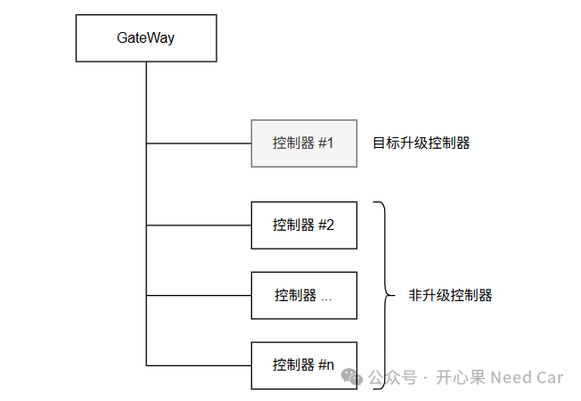
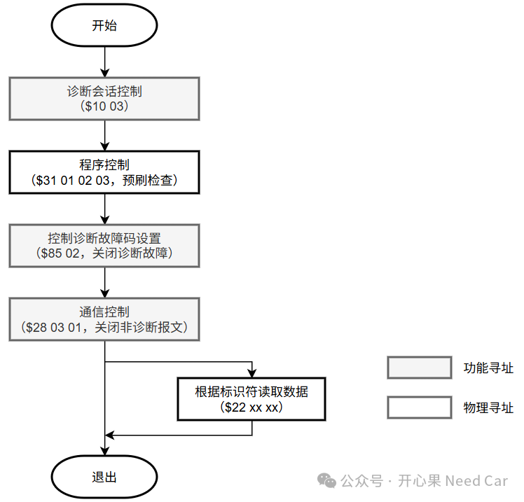

开心果 Need Car · 2025-08-13T06:28:00+08:00 · 微信原文
1、0x3E 80的作用
上位机以功能寻址，周期性发送0x3E 80诊断报文的作用是什么？先来理解几个关键词:
功能寻址：上位机工具一对多地与ECU通信，换句话说，上位机工具发送的诊断报文（eg：0x3E 80）可以被多个ECU接收处理。
发送周期：上位机按照S3client时间参数（eg：2s）约束的周期发送诊断报文。
发送0x3E（Tester Present）80：会话维持服务，维持ECU处于非默认会话。其中，Sub-function(0x80)的最高位为1，即：肯定响应抑制位SPRMIB（Suppress Positive Response Message Indication Bit）置位。对接收0x3E 80报文的ECU，不需要回复肯定响应。
当ECU处于非默认会话后，软件启动S3server时间参数（eg：5s）。如果ECU在S3server时间内都没有收到任何诊断报文，那么ECU会从非默认会话跳转到默认会话。
刷写目标ECU的过程中，上位机工具不间断的给刷写ECU发送诊断报文，刷写ECU因为收到诊断报文（S3Server收到诊断报文重置），而不会从非默认会话跳转到默认会话。那么，上位机为什么还发送0x3E 80呢？
上位机周期性发送0x3E 80不仅使得上位机功能复杂，而且，对于刷写ECU来说，还需要额外处理0x3E 80报文。这不是“得不偿失”吗？
2、发送0x3E 80的原因
对于整车架构，控制器从几十个到上百个不等，如下图所示。所以，在OTA（Over the Air）过程中，实现特定控制器的升级并不是一件容易的事情。因为这需要管控好非升级控制的通信，不然，就会出现故障码DTC（Diagnostic Trouble Code）乱报，升级失败等各种非预期问题。

在Pre-Programming Step阶段：使用功能寻址发送诊断服务（0x10 03），使得多个ECU进入扩展会话。除此之外，多数OEM还会使用0x85 02服务关闭多个ECU的DTC设置。使用0x28 03 01关闭多个ECU的通信（应用报文和网络管理报文），将总线使用权让给低优先级的诊断报文。预编程刷写流程示意如下：

按照UDS协议要求：当ECU从非默认会话切换到默认会话时，在非默认会话下执行的0x28和0x85服务会因为程序跳转到默认会话而被重置，即：ECU间可以重新通信，故障重新监控。
所以，对于网段内非刷写ECU来说，如果在S3server时间（eg：5s）内没有收到任何诊断报文，这些ECU会从非默认会话跳转到默认会话。之后，这些非升级ECU重新开始通信和故障诊断。所以，使用功能寻址，周期性发送0x3E 80诊断报文的目的是为了让其他非升级ECU维持在非默认会话下，从而保证升级ECU的刷写流程不受干扰。
点击下方关注，一起聊聊Autosar/嵌入式，如果需要，联系作者进群，给你更专业的解答
往期精彩回顾